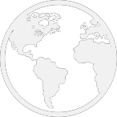
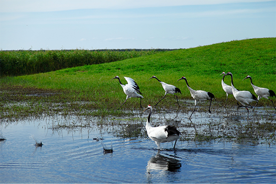
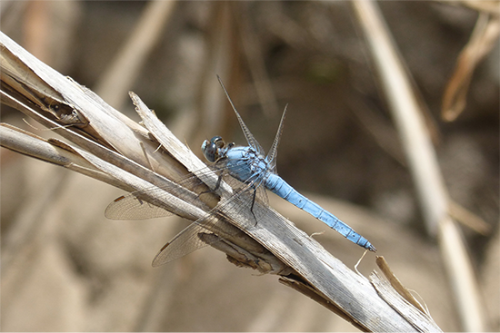
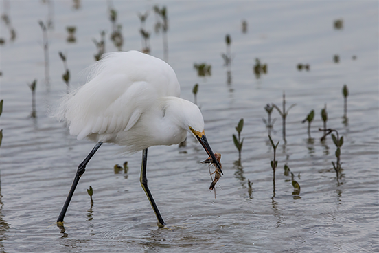

你想了解哪些生态相关的呢？
热门搜索
潘塔纳尔沼泽地
全球变暖
两极冰川融化

全球生态
生态环境是指由生物群落及非生物自然因素组成的各种生态系统所构成的整体，主要或完全由自然因素形成，并间接地、潜在地、长远地对人类的生存和发展产生影响。因此，要保护和改善生活环境，就必须保护和改善生态环境。
随手拍
记录身边好的、坏的生生态环境，拍下来向大家展示生态的多样性，你的每一次记录，都是在对环保贡献自己的力量，从现在开始，记录身边的美好。
濒危动物
濒危动物是指所有由于物种自身的原因或受到人类活动或自然灾害的影响，而有灭绝危险的野生动物物种。从广义上讲，濒危动物泛指珍贵、濒危或稀有的野生动物。
生态污染
水污染
森林污染
大气污染
垃圾污染
金属污染
水污染是由有害化学物质造成水的使用价值降低或丧失，污染环境的水。污水中的酸、碱、氧化剂，以及铜、镉、汞、砷等化合物，苯、二氯乙烷、乙二醇等有机毒物，会毒死水生生物，影响引用水源、风景区景观。污水中的有机物被微生物分解时消耗水中的氧，影响水生生物的生命，水中溶解氧耗尽后，有机物进行厌氧分解，产生硫化氢、硫酸等难闻气体。
在1980年至1995年的15年之间，全球森林面积共减少了180万平方公里，平均每年损失12万平方公里的森林，大多数发生在第三世界国家的热带林。从1990年至2000年，十年间全球热带天然林面积减少14.2万平方公里，热带人工林增加1.9万平方公里，而其他地区则增加天然林1.7万平方公里及人工林1.2万平方公里。
大气污染物由人为源或者天然源进入大气（输入），参与大气的循环过程，经过一定的滞留时间之后，又通过大气中的化学反应、生物活动和物理沉降从大气中去除（输出）。如果输出的速率小于输入的速率，就会在大气中相对集聚，造成大气中某种物质的浓度升高。当浓度升高到一定程度时，就会直接或间接地对人、生物或材料等造成急性、慢性危害，大气就被污染了。
工业废渣是指工业生产、加工过程中产生的废弃物，主要包括煤矸石、粉煤灰、钢渣、高炉渣、赤泥、塑料和石油废渣等。生活垃圾主要是厨房垃圾、废塑料、废纸张、碎玻璃、金属制品等等。在城市，由于人口不断增长，生活垃圾正以每年10%的速度增加，构成一大公害。
金属污染指由重金属或其化合物造成的环境污染。主要由采矿、废气排放、污水灌溉和使用重金属超标制品等人为因素所致。
因人类活动导致环境中的金属含量增加，超出正常范围，直接危害人体健康，并导致环境质量恶化。2011年4月初，中国首个“十二五”专项规划——《重金属污染综合防治“十二五”规划》获得国务院正式批复，防治规划力求控制5种重金属。
优美环境
  